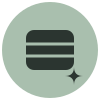
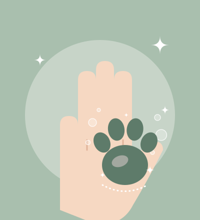
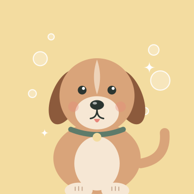
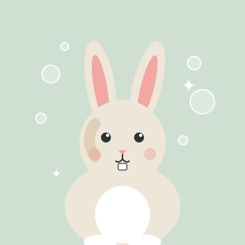

Clean pets.
Dry paws.
Zero water.
Rinse-free foams, powders and wipes that leave dogs, cats and small pets fresh and fluffy. They're gentle on your hands and contain nothing that harms animals.

Eight ways to a fresher friend.
Every collection is made for a specific pet or need, from fluffy Persians to tiny hamsters, and from muddy paws to tear stains.


Bath time, minus the bath.
No tub, no towel-drying marathon and no wet-dog smell. Three calm steps, about five minutes.

Spray or foam
Apply a few pumps of foam or mist onto the coat, focusing on dirty or smelly spots.

Massage in
Work it through to the skin with your fingers or a mitt. Plant cleansers lift dirt and oil.

Towel off
Rub with a dry towel and brush through. Done: soft, fresh and fluffy, with no rinse.

Kind to paws.
Kind to palms.
Hand-safe
Dermatologically tested on human skin, so there's no dryness, stinging or residue on your hands.
Pet-safe
pH balanced for animal skin and lick-safe, with no parabens, sulphates or harsh alcohol.
Plant-powered
Coconut cleansers, oat, aloe and plant enzymes do the work in place of water.
Cruelty-free
Never tested on animals and free from ingredients that harm animals or waterways.
Loved by pets and their people.
Thousands of calmer grooming sessions and far fewer wet sofas.
“My indie dog Bruno used to hide under the bed at bath time. Now it's five minutes with the foam and a towel, and he actually wags through it.”

Ananya R.Bruno's mum · Bengaluru“Finally something for my Persian that doesn't end in scratches. The mousse is silent — Mishti doesn't even notice.”
“Our bunny can't be bathed, so the spot foam is a lifesaver. Gentle, unscented, and my hands don't get dry at all.”

Fatima K.Cotton's family · PuneJoin the Whisker Club.
Grooming tips, new launches and first news when online ordering opens. One letter a month.